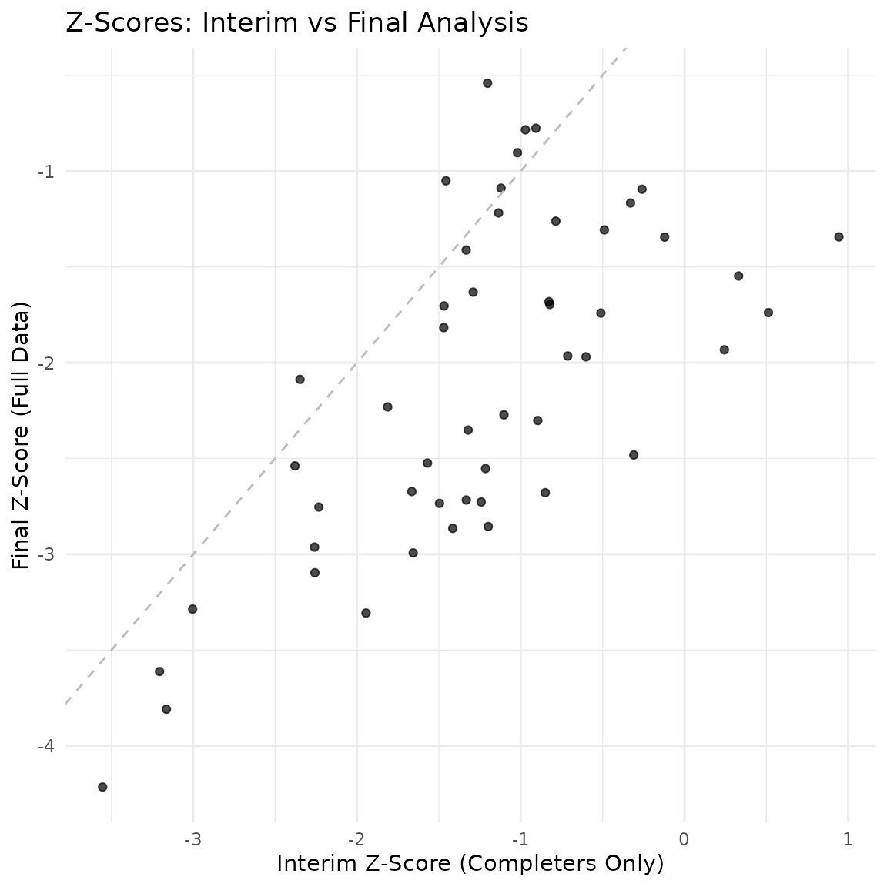

Group Sequential Simulation with Completers Analysis
completers_interim_example.RmdThis vignette demonstrates how to simulate a group sequential design where an interim analysis is conducted based on a specific number of “completers” (subjects who have finished their follow-up).
Simulation Setup
We define a trial with the following parameters:
- Sample Size: 200 patients.
- Enrollment: Recruited over 12 months.
- Follow-up: 2 years maximum follow-up per patient.
- Interim Analysis: Conducted when 40% of patients (80 subjects) have completed their 2-year follow-up. The interim analysis includes only these completers.
- Final Analysis: Conducted when all patients have completed follow-up (or dropped out). Includes all available data (completers and partial follow-up).
# Parameters
n_total <- 200
enroll_duration <- 12 # months
max_followup <- 12 # months (using months as time unit for clarity)
# Convert to years if rates are annual, but let's stick to consistent units.
# Let's say rates are per YEAR, so we convert time to years.
# Time unit: Year
n_total <- 200
enroll_duration <- 1 # 1 year
max_followup <- 1 # 1 year
enroll_rate <- data.frame(
rate = n_total / enroll_duration,
duration = enroll_duration
)
fail_rate <- data.frame(
treatment = c("Control", "Experimental"),
rate = c(0.5, 0.35) # Events per year
)
dropout_rate <- data.frame(
treatment = c("Control", "Experimental"),
rate = c(0.05, 0.05),
duration = c(100, 100)
)Simulation Loop
We will simulate 50 trials. For each trial, we perform the interim and final analyses.
set.seed(2024)
n_sims <- 50
results <- data.frame(
sim_id = integer(n_sims),
interim_date = numeric(n_sims),
interim_z = numeric(n_sims),
interim_n = integer(n_sims),
interim_info = numeric(n_sims),
final_date = numeric(n_sims),
final_z = numeric(n_sims),
final_n = integer(n_sims),
final_info = numeric(n_sims),
info_frac = numeric(n_sims)
)
# Target completers for interim (40%)
target_completers <- 0.4 * n_total
for (i in 1:n_sims) {
# 1. Simulate Trial Data
sim_data <- nb_sim(
enroll_rate = enroll_rate,
fail_rate = fail_rate,
dropout_rate = dropout_rate,
max_followup = max_followup,
n = n_total
)
# 2. Interim Analysis (Completers Only)
# Find date when target_completers is reached
date_interim <- cut_date_for_completers(sim_data, target_completers)
# Cut data for completers at this date
data_interim <- cut_completers(sim_data, date_interim)
# Analyze (Mütze Test)
res_interim <- mutze_test(data_interim)
# Extract Z-statistic
z_interim <- res_interim$z
# Extract Information
info_interim <- 1 / res_interim$se^2
# 3. Final Analysis (All Data)
# Date is when last patient completes (or max follow-up reached)
# For final analysis, we use all data collected up to the end of the study.
# The end of the study is when the last patient reaches max_followup.
date_final <- max(sim_data$calendar_time)
# Cut data at final date (includes partial follow-up for dropouts, full for completers)
data_final <- cut_data_by_date(sim_data, date_final)
res_final <- mutze_test(data_final)
z_final <- res_final$z
# Extract Information
info_final <- 1 / res_final$se^2
# Store results
results$sim_id[i] <- i
results$interim_date[i] <- date_interim
results$interim_z[i] <- z_interim
results$interim_n[i] <- nrow(data_interim)
results$interim_info[i] <- info_interim
results$final_date[i] <- date_final
results$final_z[i] <- z_final
results$final_n[i] <- nrow(data_final)
results$final_info[i] <- info_final
results$info_frac[i] <- info_interim / info_final
}Results Summary
We summarize the distribution of the test statistics (Z-scores) at the interim and final analyses.
summary(results[, c("interim_date", "interim_z", "interim_info", "final_date", "final_z", "final_info", "info_frac")])
#> interim_date interim_z interim_info final_date
#> Min. :1.329 Min. :-3.1089 Min. : 3.863 Min. :1.883
#> 1st Qu.:1.390 1st Qu.:-2.1047 1st Qu.: 6.001 1st Qu.:1.970
#> Median :1.411 Median :-1.4332 Median : 7.144 Median :2.015
#> Mean :1.420 Mean :-1.2836 Mean : 7.409 Mean :2.014
#> 3rd Qu.:1.455 3rd Qu.:-0.6467 3rd Qu.: 8.571 3rd Qu.:2.061
#> Max. :1.536 Max. : 1.4275 Max. :11.666 Max. :2.220
#> final_z final_info info_frac
#> Min. :-4.0901 Min. :14.58 Min. :0.2162
#> 1st Qu.:-2.2880 1st Qu.:17.78 1st Qu.:0.3452
#> Median :-1.3878 Median :18.75 Median :0.3818
#> Mean :-1.5391 Mean :19.11 Mean :0.3882
#> 3rd Qu.:-0.9025 3rd Qu.:20.99 3rd Qu.:0.4365
#> Max. : 1.0082 Max. :23.67 Max. :0.5737Visualization
Comparison of Z-scores at Interim vs Final Analysis.
# Correlation between interim and final Z-scores
cor_z <- cor(results$interim_z, results$final_z)
cat("Correlation between interim and final Z-scores:", round(cor_z, 3), "\n")
#> Correlation between interim and final Z-scores: 0.585
ggplot(results, aes(x = interim_z, y = final_z)) +
geom_point(alpha = 0.7) +
geom_abline(intercept = 0, slope = 1, linetype = "dashed", color = "gray") +
labs(
title = paste0("Z-Scores: Interim vs Final Analysis (Cor = ", round(cor_z, 3), ")"),
x = "Interim Z-Score (Completers Only)",
y = "Final Z-Score (Full Data)"
) +
theme_minimal()
The plot shows the correlation between the interim statistic (based on 40% completers) and the final statistic.